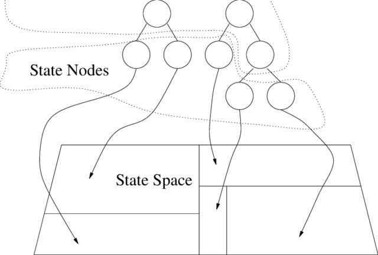
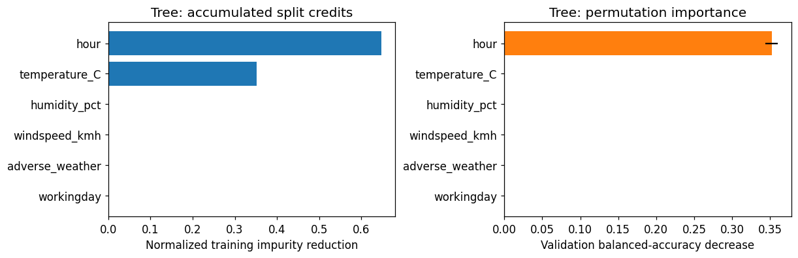
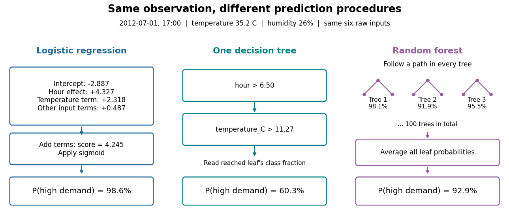
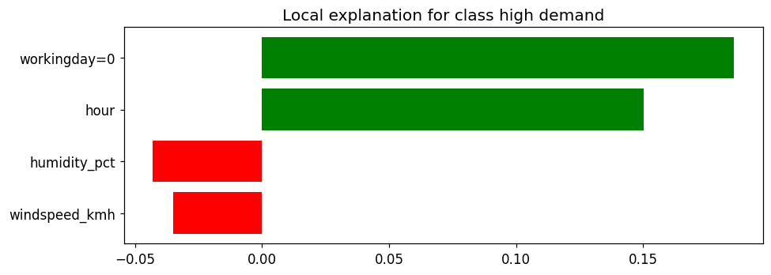
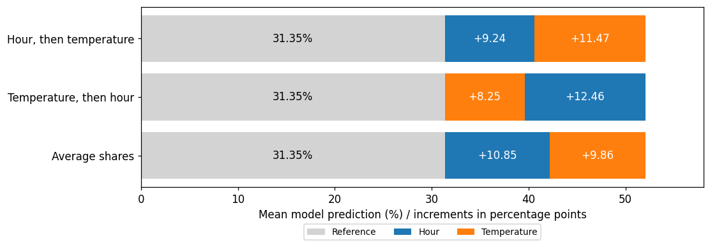
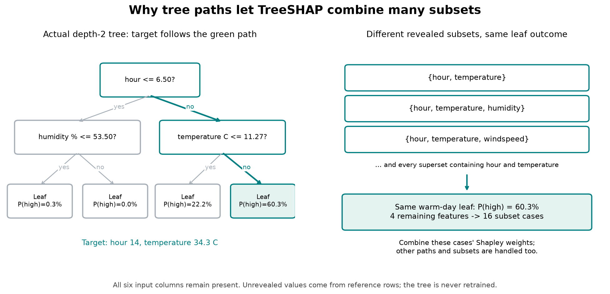
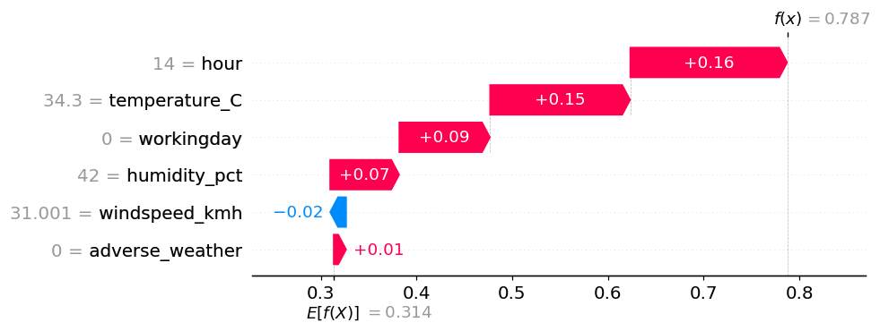
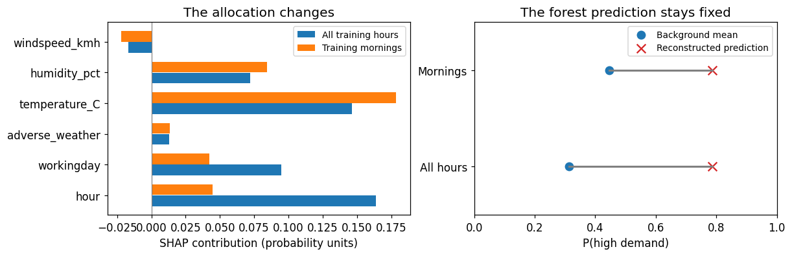

| hour | workingday | adverse_weather | temperature_C | humidity_pct | windspeed_kmh | |
|---|---|---|---|---|---|---|
| 0 | 0 | 0 | 0 | 3.3 | 81.0 | 0.0 |
| 1 | 1 | 0 | 0 | 2.3 | 80.0 | 0.0 |
| 2 | 2 | 0 | 0 | 2.3 | 80.0 | 0.0 |
Interpretable Machine Learning
Data-Centric AI (Module II)
Matteo Francia
DISI — University of Bologna
m.francia@unibo.it
DISI — University of Bologna
m.francia@unibo.it

Session plan: theory and coding
| Activity |
|---|
| Theory 1: Interpretability, goals, method overview, logistic regression versus trees |
| Coding 1 (~15 min): Exercises 1-2 |
| Theory 2: Local explanations with LIME and SHAP for tabular data |
| Coding 2 (~15 min): Exercises 3-4 |
| Theory 3: Explanation quality and multi-objective model selection |
| Coding 3 (~15 min): Exercises 5-6 |
The interpretability issue
A validation score tells us how often a model predicts well, but leaves its reasoning hidden.
- A predictor can use information recorded after the outcome.
- Different fitted models can reach similar scores using different relationships.
- Understanding depends on the person and task, not just the algorithm.
Question: would you deploy a bike-demand model that predicts total rentals?
Claim What evidence supports it? The model predicts well on these later hours Held-out performance The model uses temperature in this prediction A rule, coefficient, or attribution Raising temperature would increase real demand A causal study with appropriate assumptions
Who needs the explanation?
| Goal | Bike Sharing question | Evidence to seek |
|---|---|---|
| Improve the model | Is there leakage or an encoding bug? | Inputs and rules used |
| Justify model or prediction | Why flag this hour as high demand? | An explanation an operator can inspect |
| Discover insights | Does the model capture commuting patterns? | Patterns across hours and working days |
Choose the question and audience before the explanation method.
A bike operator asks: “Should I prepare for demand during this hour?”
A model developer asks: “Did the model learn a shortcut?”
A researcher asks: “How does the fitted relationship vary by working day?”
Interpretability Methods
| Approach | Global: model behavior | Local: one prediction |
|---|---|---|
| Interpretable by design | Logistic coefficients; a small tree | Log-odds terms; a tree path |
| Post-hoc, model-agnostic | Permutation importance | LIME; KernelSHAP |
| Post-hoc, model-specific | Aggregate TreeSHAP values | TreeSHAP for a tree or forest |
- Global: explain model behavior across many observations, e.g., which features generally drive predicted bike demand.
- Local: explain one prediction, e.g., why the model predicts high demand for a particular hour.
Working example: UCI Bike Sharing (Fanaee-T 2013)
cnt = casual + registered: exclude all three from predictors.
Does high demand occur at the same hours on working and non-working days?

Logistic Regression: Add First, Then Convert
For one observation, logistic regression makes a prediction in two steps:
Build a score: multiply each encoded input \(z_j(x)\) by its learned coefficient, then add the terms and intercept:
\[s(x)=\beta_0+\sum_j\beta_j z_j(x).\]
Convert the total score to a probability using the sigmoid:
\[p(x)=P(y=1\mid x)=\sigma(s(x))=\frac{1}{1+e^{-s(x)}}.\]
The score can be any real number; the probability is between 0 and 1.
- A score of 0 maps to 50%; positive scores map above 50%.
- The score is also called log-odds, because \(s(x)=\log\!\frac{p(x)}{1-p(x)}\).

Discussion: Why One-Hot Encode Hour?
Hour is numeric, but demand can have separate morning and evening peaks.
- Raw hour in logistic regression: a term \(\beta_h h\) assumes the same change in log-odds for every one-hour increase, holding other inputs fixed.
- One-hot encoding (OHE): each hour gets its own effect relative to hour 0, allowing a flexible hourly pattern.
- Trade-off: OHE uses more coefficients and ignores cyclic proximity: 23:00 and 00:00 are adjacent in time but separate categories.
- Alternatives: sine/cosine features preserve the daily cycle.
Read the Fitted Logistic Coefficients
The plot shows the eight largest absolute coefficients, plus temperature_C.
hour_17is the score difference between hour 17 and hour 0, holding other inputs fixed.temperature_Cis the score change for one training standard deviation of temperature, holding other inputs fixed.- A positive coefficient increases the score and hence the predicted probability.
- Magnitudes depend on encoding and scaling; they are not universal importance scores.

Worked Example: Use the Fitted Coefficients
Take the actual validation observation at 17:00 on 2012-07-01, with temperature 35.24°C.
| Encoded term | Value \(z_j\) | Fitted coefficient | Score contribution |
|---|---|---|---|
| Intercept | — | \(-2.887\) | \(-2.887\) |
temperature_C |
\(2.293\) | \(1.011\) | \(2.318\) |
humidity_pct |
\(-1.820\) | \(-0.340\) | \(0.618\) |
windspeed_kmh |
\(0.825\) | \(-0.159\) | \(-0.131\) |
hour_17 |
\(1.000\) | \(4.327\) | \(4.327\) |
workingday_1 |
\(0.000\) | \(-0.059\) | \(-0.000\) |
adverse_weather_1 |
\(0.000\) | \(-0.332\) | \(-0.000\) |
Numeric values are standardized using training statistics; OHE values are 0 or 1. The other hour indicators are all 0.
\[s=\beta_0+\sum_j\beta_j z_j=4.245,\qquad p=\frac{1}{1+e^{-s}}=98.6\%.\]
The Same Fitted Coefficient, Different Probability Changes
The fitted temperature coefficient is \(\beta_T=1.011\). One training standard deviation is 8.99°C; the training mean is 14.64°C.
Since \(z_T=(T-14.64)/8.99\), raising temperature by 8.99°C raises \(z_T\) by 1 and adds 1.011 to the score.
Start from the actual 00:00 and 17:00 validation observations on 2012-07-01, raise temperature by one training standard deviation:
| Observation | Score change | Probability change | Percentage-point change |
|---|---|---|---|
| 00:00 | \(-1.227\to-0.215\) | \(22.7\%\to44.6\%\) | \(+22.0\) |
| 17:00 | \(4.245\to5.256\) | \(98.6\%\to99.5\%\) | \(+0.9\) |
The score increment is the same.
- The probability increment differs because sigmoid depends on the starting score.
- These are controlled model predictions, not causal temperature effects.
One Prediction, Two Scales: Score and Probability
These panels show the same fitted model while temperature varies and other conditions stay fixed.
- Left: add contributions. The temperature term is \(\beta_T z_T\). A fixed temperature increase adds a fixed amount to the score: each hour’s line is straight.
- Right: apply sigmoid. Each left-hand score becomes \(p=1/(1+e^{-s})\). This bends the response and keeps it between 0 and 1.
- Hour 17 and hour 0 have different score offsets but the same temperature slope: this model has no hour-by-temperature interaction.
The dotted score line \(s=0\) corresponds to the dotted probability line \(p=0.5\).
- Near probability 0 or 1, the same score change has a smaller probability effect.

Coefficients Become Contributions When Inputs Are Known
A coefficient \(\beta_j\) is a learned multiplier. Its contribution also depends on the encoded value for the observation being explained.
To compare one hour with the training population, let \(\mu_j\) be the training mean of encoded input \(j\):
\[c_j(x)=\beta_j\bigl(z_j(x)-\mu_j\bigr),\qquad s_{\mathrm{ref}}=\beta_0+\sum_j\beta_j\mu_j.\]
\(c_j(x)\) measures how far this input moves the score from that reference.
Add the reference score and all contributions to reconstruct the score, then apply sigmoid once:
\[s(x)=s_{\mathrm{ref}}+\sum_j c_j(x),\qquad p(x)=\sigma\!\left(s_{\mathrm{ref}}+\sum_j c_j(x)\right).\]
Logistic Regression: Local Terms and a Global Summary
- Left: signed contributions for one validation observation, relative to the training mean. Positive bars raise its score; negative bars lower it.
- Right: average absolute contribution over validation observations.
- For hour, sum its OHE contributions before taking the absolute value.

Decision tree

Decision tree
Decision tree: rules and paths
Trace a path from root to leaf. What information does the model ignore on that path?
- Each split asks a threshold question; a path joins conditions with AND.
- A leaf’s class fraction estimates high-demand probability here; it is not automatically calibrated.
- Trees can learn interactions without explicitly creating interaction features.
- A small tree is inspectable; many leaves make the full model difficult to read.

How the tree chooses a split
For the root’s selected feature, compare candidate thresholds using weighted child Gini impurity.
- The learner favors purer child groups, subject to constraints such as minimum leaf size.

Decision tree: importance from impurity reduction
For split node \(t\), let \(N_t\) be the number of training records reaching that node and \(G(t)\) its Gini impurity.
- Assume all records have equal weight.
\(N\) is the total number of training records; \(N_L\) and \(N_R\) count those reaching the left and right children. The split’s credit \(\Delta_t\) is
\[\Delta_t=\frac{N_t}{N}\left[G(t)-\frac{N_L}{N_t}G(L)-\frac{N_R}{N_t}G(R)\right].\]
- Credit the feature used at that node with \(\Delta_t\).
- Sum its credits over all split nodes in the fitted tree.
- Normalize feature totals to sum to one when total reduction is positive.
This is feature_importances_: a global training statistic
- It has no direction and does not explain one prediction’s probability.
Tree importance: training credit versus validation reliance
Why temperature has zero permutation importance here?
The split threshold is 11.27°C, but all validation temperatures are at least 11.74°C.
- Shuffling them never changes the branch taken.
- Its training impurity importance can still be high. Why?

Logistic regression versus a small tree
| Logistic regression | Small decision tree | |
|---|---|---|
| Representation | Additive log-odds | Threshold rules |
| Nonlinear relationships | Engineer suitable input terms | Learned piecewise |
| Interactions | Add interaction terms | Learned along paths |
| Local reading | Sum transformed feature terms | Follow one path |
| Main readability limit | Too many coefficients | Too many rules |
Which procedure could you reproduce by hand?

Predictive Performance and Structural Complexity
Does improved prediction quality justify a model that takes more work to simulate?
- Prediction quality: balanced accuracy and high-demand recall compare predictions with observed labels.
- Structural complexity: global coefficients, rules and leaves; local terms or split checks needed for one prediction (Lipton 2018).
- Human simulatability: measure how accurately and quickly people reproduce model predictions. The counts below are proxies, not a human evaluation (Doshi-Velez and Kim 2017; Poursabzi-Sangdeh et al. 2021).
| Logistic regression | Depth-2 tree | Random forest | |
|---|---|---|---|
| Balanced accuracy | 0.883 | 0.857 | 0.906 |
| High-demand recall | 0.869 | 0.995 | 0.867 |
| Original inputs used | 6 | 3 | 6 |
| Global learned structure | 28 coefficients + intercept | 3 split rules | 100 trees; 8,769 splits |
| Leaves (sum across trees) | Not applicable | 4 | 8,869 |
| Mean local work (validation) | 4.92 terms | 2.00 split checks | 660.59 split checks |
| Max local work (validation) | 6 terms | 2 split checks | 800 split checks |
Coding break 1: Exercises 1–2 (~15 minutes)
Run the full notebook, then complete Exercise 1 and Exercise 2.
Local explanations for a fixed forest
We explain its high-demand probability for one fixed validation hour.
- LIME fits a simple surrogate near this observation.
- SHAP allocates the prediction minus a reference output among features.
| hour | workingday | adverse_weather | temperature_C | humidity_pct | windspeed_kmh | observed_high | forest_probability | |
|---|---|---|---|---|---|---|---|---|
| 13857 | 14 | 0 | 0 | 34.3 | 42.0 | 31.001 | 1 | 0.787 |
LIME: Local Interpretable Model-agnostic Explanations
Explain One Forest Prediction
LIME learns a small explanatory model for one observation (Ribeiro et al. 2016).
Our forest combines 100 trees. For 14:00 on 5 August 2012, its inputs include hour 14, temperature 34.30°C, humidity 42%, and a non-working-day flag.
Which input conditions help explain the forest’s high-demand probability for this observation?
We want a short explanation of this one prediction that an operator can inspect.
LIME: Explain One Forest Prediction
Imagine asking the forest many questions about alternative input rows:
- What does it predict for another hour of the day?
- What does it predict with a different temperature or working-day flag?
LIME samples many such rows and records the forest’s answers.
- It then teaches a small linear model to imitate those answers, giving greater weight to rows similar to the observation we are explaining.
- This small model is the surrogate: a stand-in for the forest around one observation.
- We read its few coefficients to see which conditions support or oppose a high-demand prediction.
Local means that agreement matters most around this observation.
- The same surrogate may work poorly elsewhere.
LIME: Agreement Plus Simplicity
Choose a simple model that closely imitates the forest around the observation we want to explain (Ribeiro et al. 2016).
\[g_x=\arg\min_{g\in G}\left[L(f,g,\pi_x)+\Omega(g)\right].\]
| Symbol | Meaning |
|---|---|
| \(x\) | The one observation being explained |
| \(f\) | The trained forest’s high-demand probability function |
| \(g\in G\) | One candidate surrogate from the family \(G\) of allowed simple models |
| \(\pi_x\) | Weights expressing how similar sampled observations are to \(x\) |
| \(L(f,g,\pi_x)\) | How much the surrogate disagrees with the forest, emphasizing similar observations |
| \(\Omega(g)\) | A penalty or restriction keeping the surrogate small |
| \(\arg\min\), \(g_x\) | Select the model with the smallest total; call that fitted model \(g_x\) |
LIME: The Formula Used by Tabular Surrogate
\[\min_{b_0,b}\underbrace{\sum_{i=1}^{M}w_i\left[y_i-(b_0+b^\top z_i')\right]^2}_{\text{imitate forest answers nearby}}+\underbrace{\lambda\sum_j b_j^2}_{\text{shrink coefficients}}.\]
| Symbol | Plain meaning |
|---|---|
| \(M\), \(i\) | Number of sampled rows; \(i\) identifies one sampled row |
| \(z_i\), \(y_i=f(z_i)\) | A sampled raw row and the forest’s answer for it |
| \(z_i'=h_x(z_i)\) | Standardized numeric inputs and yes/no category matches; only selected terms enter the fit |
| \(b_0\), \(b\), \(b^\top z_i'\) | Surrogate intercept, coefficients, and the sum of coefficient × encoded-input terms |
| \(w_i=\exp[-d_i^2/(2\sigma^2)]\) | How strongly row \(i\) influences the fit |
| \(d_i\) | Distance in standardized inputs and category matches |
| \(\lambda\) | Strength of coefficient shrinkage |
| \(y_i\) | Forest probabilities |
LIME: The Approach in Our Bike Example
- Choose the observation: 14:00 on 5 August 2012, 34.30°C, 42% humidity, non-working day.
- Sample 5,000 alternative rows around its numeric inputs. Include the original observation.
- Ask the forest for a probability on every sampled row..
- Encode inputs: standardize numeric fields; encode whether working-day and adverse-weather flags match the observation.
- Weight similar rows more strongly using kernel width 0.5, select four terms, and fit the small linear surrogate.
- Read its coefficients and check its fit. Repeat with another seed to check stability.
num_features=4 keeps the explanation short. Numeric fields remain continuous here; they are not converted into temperature intervals.
Code
def make_lime_explainer(seed=42, kernel_width=0.5):
return LimeTabularExplainer(
X_train.to_numpy(), feature_names=feature_names,
class_names=["low demand", "high demand"], categorical_features=category_positions,
mode="classification", discretize_continuous=False,
sample_around_instance=True, kernel_width=kernel_width, random_state=seed)
def explain_lime(row, seed=42, num_features=4, num_samples=5000,
kernel_width=0.5, model_regressor=None):
return make_lime_explainer(seed, kernel_width).explain_instance(
row.iloc[0].to_numpy(), forest_proba, labels=(1,), num_features=num_features,
num_samples=num_samples, model_regressor=model_regressor)
lime_exp = explain_lime(x)LIME: Raw Inputs Become Surrogate Inputs
The forest receives raw values. The local surrogate uses training-standardized numeric values and yes/no matches for categorical flags.
| Field | Input to the surrogate |
|---|---|
| Hour, temperature, humidity, windspeed | \((\text{value}-\text{training mean})/\text{training standard deviation}\) |
| Working-day flag | 1 when it matches this observation’s non-working-day flag; 0 otherwise |
| Adverse-weather flag | 1 when it matches this observation’s weather flag; 0 otherwise |
Sampling, Weighting, and Fitting
Distance from the explained observation determines each sampled row’s weight.
The red cross is the explained observation.

Read a LIME Explanation
The bars are coefficients of the small local surrogate:
- Positive numeric coefficients mean increasing that standardized input raises the surrogate output; negative coefficients mean it lowers it.
workingday=0describes matching this observation’s non-working-day flag.
These are not causal effects.

Reading This LIME Result
At 14:00 on 5 August 2012, the forest predicts 78.73% high-demand probability.
- Use the actual encoded values to read the four terms:
| Term | Coefficient | Encoded value | Contribution |
|---|---|---|---|
workingday |
\(+0.186\) | \(+1.000\) | \(+0.186\) |
hour |
\(+0.150\) | \(+0.354\) | \(+0.053\) |
humidity_pct |
\(-0.043\) | \(-1.019\) | \(+0.044\) |
windspeed_kmh |
\(-0.035\) | \(+2.146\) | \(-0.075\) |
The intercept is 0.577. Add it to the contributions to obtain the surrogate’s 78.43% prediction.
- A negative humidity coefficient means increasing humidity lowers the local output.
Does the surrogate fit the forest?
Inspect both diagnostics:
- Point discrepancy: surrogate prediction versus forest probability at this hour.
- Weighted \(R^2\): agreement on LIME’s sampled neighborhood.
| forest_P(high) | surrogate_at_hour | point_discrepancy | weighted_R2 | |
|---|---|---|---|---|
| 0 | 0.787 | 0.784 | 0.003 | 0.628 |
LIME stability
Repeat the explanation of the same model and hour with different random seeds.
- Do the strongest terms and their signs change?
- Do local fit and point discrepancy change?
- Would the explanation support the same operator decision?

LIME: Limitations and the Next Question
LIME provides a short local summary, with several limitations (Ribeiro et al. 2016):
- Approximation: a small linear surrogate can miss nonlinear behavior and interactions.
- Dependence on choices: sampling, random seed, feature encoding, neighborhood width and explanation length can change the result.
- Unrealistic perturbations: sampled combinations may not resemble real bike-sharing observations.
- Local scope: good agreement here does not guarantee agreement elsewhere; the coefficients are model associations rather than causal effects.
Can we allocate the model’s actual prediction using an explicit rule for sharing credit?
SHAP
The Problem: Share a Prediction Difference
For 14:00 on 5 August 2012, the forest predicts 78.73% high-demand probability. Its mean prediction over 100 reference training observations is 31.35%.
How should the input features share the 47.38-percentage-point difference between that reference and this prediction?
LIME gave us a small model that behaves similarly nearby.
What is the real feature contribution?
- Problem: features interact. The information supplied by temperature can depend on whether hour is already known (Lundberg and Lee 2017).
Intuition: Reveal Values, Keep the Model Fixed
The target is the 14:00 observation we want to explain.
| Row | Hour | Work | Adverse | Temp (°C) | Humidity (%) | Wind (km/h) | P(high) |
|---|---|---|---|---|---|---|---|
| Target | 14 | 0 | 0 | 34.30 | 42 | 31.00 | 78.73% |
B1–B3 are the first three of our 100 reference training rows.
| Row | Hour | Work | Adverse | Temp (°C) | Humidity (%) | Wind (km/h) | P(high) |
|---|---|---|---|---|---|---|---|
| B1 | 5 | 1 | 0 | 20.20 | 83 | 13.00 | 0.92% |
| B2 | 16 | 1 | 0 | 23.96 | 57 | 11.00 | 81.69% |
| B3 | 12 | 1 | 0 | 32.42 | 44 | 20.00 | 45.83% |
Nothing revealed: query the already fitted forest on the reference rows.
- Their 100 prediction probabilities average 31.35%.
- “Missing” means the target’s value is unrevealed for the explanation.
- The model still receives all six columns, filled with original values
Reveal Hour First: Replace Its Values, Then Predict
To reveal a feature, copy its value from the target observation into every reference row.
- “Adding a feature” means copying one more target value into these query rows.
- Leave unrevealed columns at their original values, predict on the resulting rows, and average the probabilities.
| Row | Hour | Work | Adverse | Temp (°C) | Humidity (%) | Wind (km/h) | P(high) |
|---|---|---|---|---|---|---|---|
| Target | 14 | 0 | 0 | 34.30 | 42 | 31.00 | 78.73% |
Reveal hour. Fix hour = 14 in every reference row and Keep its other five values unchanged.
| Row | Hour | Work | Adverse | Temp (°C) | Humidity (%) | Wind (km/h) | P(high) |
|---|---|---|---|---|---|---|---|
| B1 | 14 | 1 | 0 | 20.20 | 83 | 13.00 | 57.55% |
| B2 | 14 | 1 | 0 | 23.96 | 57 | 11.00 | 62.27% |
| B3 | 14 | 1 | 0 | 32.42 | 44 | 20.00 | 46.08% |
mixed = background.copy()
mixed["hour"] = x.iloc[0]["hour"]
probabilities = forest.predict_proba(mixed)[:, 1]Across all 100 mixed rows, the mean is 40.59%, versus 31.35% with nothing revealed: +9.24 percentage points.
Reveal Temperature First: A Different Context
| Row | Hour | Work | Adverse | Temp (°C) | Humidity (%) | Wind (km/h) | P(high) |
|---|---|---|---|---|---|---|---|
| Target | 14 | 0 | 0 | 34.30 | 42 | 31.00 | 78.73% |
Reveal temperature: start again from the original reference rows and fix only temperature = 34.30°C.
- Hour is missing, so its reference values remain.
| Row | Hour | Work | Adverse | Temp (°C) | Humidity (%) | Wind (km/h) | P(high) |
|---|---|---|---|---|---|---|---|
| B1 | 5 | 1 | 0 | 34.30 | 83 | 13.00 | 3.34% |
| B2 | 16 | 1 | 0 | 34.30 | 57 | 11.00 | 80.12% |
| B3 | 12 | 1 | 0 | 34.30 | 44 | 20.00 | 45.47% |
mixed = background.copy()
mixed["temperature_C"] = x.iloc[0]["temperature_C"]
probabilities = forest.predict_proba(mixed)[:, 1]The same forest (no retraining!) now gives a mean of 39.60%.
Reveal Hour and Temperature
| Row | Hour | Work | Adverse | Temp (°C) | Humidity (%) | Wind (km/h) | P(high) |
|---|---|---|---|---|---|---|---|
| Target | 14 | 0 | 0 | 34.30 | 42 | 31.00 | 78.73% |
Reveal temperature and hour.
| Row | Hour | Work | Adverse | Temp (°C) | Humidity (%) | Wind (km/h) | P(high) |
|---|---|---|---|---|---|---|---|
| B1 | 14 | 1 | 0 | 34.30 | 83 | 13.00 | 47.52% |
| B2 | 14 | 1 | 0 | 34.30 | 57 | 11.00 | 45.66% |
| B3 | 14 | 1 | 0 | 34.30 | 44 | 20.00 | 45.71% |
mixed = background.copy()
mixed[["hour", "temperature_C"]] = x.iloc[0][["hour", "temperature_C"]].to_numpy()
probabilities = forest.predict_proba(mixed)[:, 1]The mean becomes 52.06%. Adding hour after temperature changes it by +12.46 points, compared with +9.24 points when hour is revealed first.
A Worked Example with Real Forest Outputs
Shapley’s idea is then to average each feature’s prediction increment across different reveal orders (Lundberg and Lee 2017).
| Values revealed | Mean forest probability |
|---|---|
| None | 31.35% |
| Hour = 14 only | 40.59% |
| Actual temperature only | 39.60% |
| Both | 52.06% |
| Reveal order | Hour’s increment | Temperature’s increment |
|---|---|---|
| Hour, then temperature | +9.24 points | +11.47 points |
| Temperature, then hour | +12.46 points | +8.25 points |
| Average share | +10.85 points | +9.86 points |

Formalize a Partly Revealed Observation
\[v_x(S)=\frac{1}{|B|}\sum_{z\in B}f(x_S,z_{\bar S}).\]
| Symbol | Meaning in this lab |
|---|---|
| \(x\), \(f\) | The chosen observation and the fixed forest’s high-demand probability function |
| \(F\), \(S\subseteq F\) | All input features, and the subset whose values have been revealed |
| \(B\), \(z\), \(|B|\) | The 100 reference training rows, one such row, and the number of rows |
| \(x_S\) | This observation’s values for the revealed features |
| \(\bar S=F\setminus S\), \(z_{\bar S}\) | Unrevealed features, filled using values from reference row \(z\) |
| \(v_x(S)\) | Average forest prediction for these mixed rows |
Only the query inputs change; the function \(f\) and its learned parameters stay fixed.
- \(v_x(\varnothing)\) is the reference mean and \(v_x(F)=f(x)\) is the actual prediction.
Compute Each Feature’s Share
For feature \(j\) among \(p=|F|\) features:
\[\phi_j(x)=\sum_{S\subseteq F\setminus\{j\}}\frac{|S|!(p-|S|-1)!}{p!}\left[v_x(S\cup\{j\})-v_x(S)\right].\]
- \(S\) contains features revealed before \(j\); \(S\cup\{j\}\) fixes one more input column to the target value; the model itself is unchanged.
- \(|S|\) counts features in \(S\);
- The weight is the fraction of feature orders in which exactly \(S\) precedes \(j\).
- Summing these weighted changes gives \(\phi_j(x)\): feature \(j\)’s average share across reveal orders.
The reference and contributions reconstruct the prediction: \(\underbrace{\phi_0}_{v_x(\varnothing)}+\sum_{j\in F}\phi_j(x)=f(x).\)
Here \(\phi_0\) is the reference probability, and signed \(\phi_j\) values are in probability units (Lundberg and Lee 2017).
The Algorithm: Average Reveal Increments
- Choose a feature order and start with the reference prediction.
- Reveal features one at a time, recording each change in the model’s prediction.
- Credit each change to the feature just revealed.
- Repeat for other orders, then average each feature’s credits.
For each feature order:
revealed = empty set
previous = prediction with no features revealed
For feature j in that order:
current = prediction after also revealing j
credit[j] += current - previous
add j to revealed; previous = current
Divide each feature's credit by the number of orders used.All orders give exact Shapley values.
- With six features, there are 720 orders but only 64 distinct revealed subsets, whose predictions can be cached (Lundberg and Lee 2017).
Computing the Shares Efficiently
| Method | How it computes the same kind of allocation | Model access |
|---|---|---|
| Feature-order estimator | Average prediction increments over sampled orders | Query predictions |
| KernelSHAP | Sample revealed subsets and fit a specially weighted additive regression | Query predictions |
| TreeSHAP | Use tree structure to compute contributions efficiently | Inspect tree paths |
Listing every order is expensive. Our forest is a tree ensemble, so we use TreeSHAP (Lundberg and Lee 2017; Lundberg et al. 2020).
TreeSHAP (Lundberg et al. 2020): Many Subsets Share a Path Outcome

If a path tests only hour and temperature, revealing humidity cannot change whether a mixed row reaches that particular leaf. Its many subset cases can be combined.
How TreeSHAP Works
TreeSHAP computes the feature shares defined earlier by exploiting the already trained tree structure (Lundberg et al. 2020).
- Read the trees: use their split features, thresholds and leaf outputs.
- Account for revealed and unrevealed values: a revealed split feature uses the target’s value; an unrevealed one uses a reference row’s value.
- Combine many subsets at once: a leaf depends only on the features tested along its root-to-leaf path
- Many revealed subsets therefore have the same effect on reaching that leaf.
- TreeSHAP uses dynamic programming to accumulate their combined Shapley weights instead of evaluating each subset separately.
- Combine the results: average over the reference rows and combine the trees’ contributions using the forest’s averaging rule.
The baseline prediction is the same forest’s mean prediction on the reference rows: 31.35% here.
- TreeSHAP returns contributions satisfying baseline + feature shares = target prediction: here 78.73%.
- It computes this allocation directly from the trees rather than fitting a local surrogate (Lundberg and Lee 2017).
Apply TreeSHAP to the Bike Forest
Explain the same 14:00 observation
- Choose 100 training observations as the reference.
- Use this observation’s known values for revealed inputs and reference rows for unrevealed ones.
- Ask TreeSHAP for contributions to class 1: high-demand probability.
Understanding the contributions
Start from the reference probability 31.35%.
Hour and temperature contribute the largest upward shares. Non-working-day status and low humidity also raise this prediction relative to the reference; windspeed contributes a small downward share.
The contributions sum to 47.38 points. Adding the 31.35% reference gives the actual 78.73% forest probability.
Positive contributions raise the prediction relative to the reference; negative contributions lower it.
| base | sum_contributions | reconstructed | forest_P(high) | |
|---|---|---|---|---|
| 0 | 0.3135 | 0.4738 | 0.7873 | 0.7873 |

SHAP: From One Prediction to Global Model Interpretation
Local question: why does this observation differ from the reference?
Global question: which inputs move predictions most across many observations?
SHAP Beeswarm: Direction, Magnitude, and Variation
Start with the distribution of local contributions across the sampled observations (Lundberg et al. 2020).
- Features are ordered by mean absolute SHAP value.
- Each dot: one validation observation for that feature.
- Horizontal position: its signed SHAP contribution. Right raises high-demand probability relative to the reference; left lowers it. A value of \(+0.1\) means +10 percentage points.
- Vertical spread: dots stack to show density; it is not another feature value.

SHAP: From One Prediction to Global Model Interpretation
Explain \(n\) sampled rows, using the same fitted forest, and 100 reference training rows.
\[I_j=\frac{1}{n}\sum_{i=1}^{n}|\phi_j(x_i)|.\]
- \(x_i\) is explained observation, \(\phi_j(x_i)\) is feature \(j\)’s signed contribution, and \(I_j\) measures its average contribution magnitude (Lundberg et al. 2020).

For these 60 validation observations: hour dominates and its contributions vary widely and can raise or lower predictions.
These are not causal effects.
Making SHAP Computation Practical
Explicitly evaluating all \(2^p\) revealed subsets works for our six features (64 subsets), but 30 features already imply over one billion subsets.
| Optimization | Practical implication |
|---|---|
| Use model structure | TreeSHAP exploits trained tree paths instead of explicitly listing every subset (Lundberg et al. 2020). |
| Use a reference sample | Our 100 training rows represent the background. Interventional TreeSHAP runtime grows linearly with reference size. |
| Explain selected observations | Inspect individual cases or a representative sample for global summaries, rather than automatically explaining every row. |
| For black-box models, sample | Sample feature orders or use KernelSHAP instead of exhaustive enumeration; check estimates as the evaluation budget increases (Lundberg and Lee 2017). |
The main costs are the number of observations explained, reference size, and model complexity.
Coding break 2: Exercises 3–4 (~15 minutes)
Go to Exercises 3–4.
- 7 min: explain validation hour 24 with LIME; repeat with another seed.
- 8 min: explain the same forest and hour with SHAP; verify reconstruction.
Deliver the explanations, diagnostics, and one reason their rankings may differ.
No single scalar certifies interpretability.
| Quantity | Scope and question | Units |
|---|---|---|
| Logistic coefficient | How sensitive is fitted log-odds to this encoded input? | Log-odds per input unit |
| LIME coefficient | Which conditions support a local surrogate? | Surrogate output units |
| Local TreeSHAP value | How is one prediction minus its baseline allocated? | Here: probability |
| Mean absolute TreeSHAP | Which features move predictions most across these hours? | Here: probability |
Dependence and unrealistic combinations
We want to know whether a conclusion is supported by the model, by a particular comparison population, or by sampling variability.
Imagine holding hour and working-day status fixed while borrowing weather from unrelated hours.
- The resulting row may be uncommon or implausible.
- A predictor can behave unexpectedly away from its training distribution.
Reference Sensitivity: What Are We Comparing Against?
Keep the same forest and the same afternoon observation, but change the SHAP reference:
- All training hours: why does this prediction differ from a typical hour in the training reference?
- Training morning hours (7–9): why does it differ from a typical morning in that reference?
The reference mean and feature shares can change because we changed the comparison question.

Recall Lab 04: Accuracy vs Model Simplicity
Reuse the multi-objective idea from the fairness lab, now for candidate decision trees:
\[\min_h\left(1-\mathrm{BA}_{\mathrm{valid}}(h),\;\#\mathrm{leaves}(h)\right).\]
- Prediction objective: lower validation error, where \(\mathrm{BA}\) is balanced accuracy.
- Complexity objective: fewer leaves to inspect; this is a readability proxy, not a human evaluation.
Question: how much predictive performance would you exchange for a smaller tree?

Neural Networks: What Can We Inspect?
A neural network combines learned transformations, for example:
\[F(x)=\sigma\!\left(W_2\,\mathrm{ReLU}(W_1z(x)+b_1)+b_2\right).\]
| Structural proxy | What it counts | Limitation |
|---|---|---|
| Trainable parameters | Weights and biases | Does not reveal which inputs drive a prediction |
| Depth and width | Layers and hidden units | Small networks can still be difficult to understand |
| Nonzero parameters | Connections remaining after sparsification | Sparse weights do not guarantee meaningful hidden features |
Use these as complexity proxies.
Neural Networks: Simple Prediction Explanations
Keep the trained network fixed and explain a chosen output \(F(x)\), such as the predicted probability of high bike demand.
| Method | Question | Scope |
|---|---|---|
| Permutation importance | How much does validation performance drop when an input is shuffled? | Global, score-dependent |
| Input gradients | Which numeric inputs affect this output under tiny changes? | Local sensitivity (Simonyan et al. 2013) |
| Integrated Gradients | How is the output difference from a chosen baseline allocated to inputs? | Local attribution (Sundararajan et al. 2017) |
Coding break 3: Exercises 5–6 (~15 minutes)
Go to Exercises 5–6.
- 7 min: identify the Pareto candidates and select a tree under the given tolerance.
- 8 min: compare two SHAP backgrounds for hour 24 and write a recommendation.
Deliver the candidate table, sensitivity check, and a two-sentence recommendation. Evaluate the selected tree on the test period only after selection.
Exercises: Guided Practice on Bike Sharing
Exercise 1: compare interpretable models
Reuse the fitted logistic pipeline. Fit a depth-4 tree on training rows with min_samples_leaf=40 and seed 42.
Compare validation balanced accuracy and high-demand recall. Does extra depth help here?
Keep the test period unused.
Exercise 2: explain a coefficient and a path
Use validation row position 24 throughout the exercise.
- Convert the temperature coefficient into an odds multiplier. What is its unit?
- Use
decision_pathto list the tree’s visited split conditions. - Show the tree’s predicted probability and observed class for this hour.
How does this local path differ from the tree’s global impurity importance? Why does neither account establish what would happen if we changed the real weather?
Code
# student_x = X_valid.iloc[[...]] # Position 24, not row label 24.
# student_odds_multiplier = np.exp(coefs[...]) # Use "temperature_C".
# print(student_odds_multiplier)
# student_nodes = student_tree.decision_path(student_x).indices
# for node in student_nodes:
# feature = student_tree.tree_.feature[node]
# if feature >= 0: # Leaves have a negative feature index.
# name = X.columns[feature]
# threshold = student_tree.tree_.threshold[node]
# direction = "<=" if student_x.iloc[0, feature] <= threshold else ">"
# print(name, direction, round(threshold, 2))
# print("P(high):", student_tree.predict_proba(student_x)[0, 1])
# print("Observed:", y_valid.iloc[...])Coding session 1 solution
Show the solution
student_tree = DecisionTreeClassifier(
max_depth=4, min_samples_leaf=40, random_state=RANDOM_STATE,
).fit(X_train, y_train)
student_scores = pd.DataFrame({
"logistic": evaluate(logistic, X_valid, y_valid),
"tree depth 4": evaluate(student_tree, X_valid, y_valid),
}).T
display(student_scores.round(3))
student_x = X_valid.iloc[[24]]
student_odds_multiplier = np.exp(coefs["temperature_C"])
print("Odds multiplier per training SD:", student_odds_multiplier)
student_nodes = student_tree.decision_path(student_x).indices
for node in student_nodes:
feature = student_tree.tree_.feature[node]
if feature >= 0:
name = X.columns[feature]
threshold = student_tree.tree_.threshold[node]
direction = "<=" if student_x.iloc[0, feature] <= threshold else ">"
print(name, direction, round(threshold, 2))
print("P(high):", student_tree.predict_proba(student_x)[0, 1])
print("Observed:", y_valid.iloc[24])The odds multiplier refers to one training standard deviation, holding other inputs fixed. A path describes one route through the fitted tree, whereas impurity importance sums training credits over all splits; neither explanation identifies a causal weather effect.
Exercise 3: fit and inspect a local surrogate
Use explain_lime on validation row position 24.
- Show its four conditions and weights.
- Show
lime_diagnosticsand interpret the weighted \(R^2\) and point discrepancy. - Repeat with seed 7; compare the two strongest terms.
Keep the forest and observation fixed.
Code
# student_x = X_valid.iloc[[...]] # Position 24.
# student_lime = explain_lime(..., seed=42)
# student_lime_repeat = explain_lime(..., seed=7)
# display(pd.DataFrame(student_lime.as_list(label=1), columns=["condition", "weight"]))
# display(pd.DataFrame([
# lime_diagnostics(student_lime...),
# lime_diagnostics(student_lime_repeat...),
# ]).round(3))
# print(student_lime.as_list(label=1)[:2])
# print(student_lime_repeat.as_list(label=1)[:2])Exercise 4: SHAP and the output scale
Explain the same row with explain_shap.
- Draw a waterfall and identify the two largest absolute contributions.
- Add the baseline to the signed contribution sum.
- Compare with the forest’s class-1 probability using
assert_allclose.
What does agreement with exact coalition enumeration check beyond reconstruction? Is a positive contribution evidence that changing the feature would increase real demand? Why might LIME rank a different condition first?
Code
# student_shap = explain_shap(...)
# shap.plots.waterfall(student_shap[0], max_display=len(feature_names))
# student_reconstructed = ... + ... # base_values plus values.sum(axis=1)
# np.testing.assert_allclose(student_reconstructed,
# forest.predict_proba(student_x)[:...], atol=1e-6)
# print(sorted(zip(feature_names, student_shap.values[0]),
# key=lambda pair: abs(pair[1]), reverse=True)[:2])Coding session 2 solution
Show the solution
student_x = X_valid.iloc[[24]]
student_lime = explain_lime(student_x, seed=42)
student_lime_repeat = explain_lime(student_x, seed=7)
display(pd.DataFrame(student_lime.as_list(label=1), columns=["condition", "weight"]))
display(pd.DataFrame([
lime_diagnostics(student_lime, student_x),
lime_diagnostics(student_lime_repeat, student_x),
]).round(3))
print(student_lime.as_list(label=1)[:2])
print(student_lime_repeat.as_list(label=1)[:2])
student_shap = explain_shap(student_x)
shap.plots.waterfall(student_shap[0], max_display=len(feature_names))
student_reconstructed = student_shap.base_values + student_shap.values.sum(axis=1)
np.testing.assert_allclose(student_reconstructed,
forest.predict_proba(student_x)[:, 1], atol=1e-6)
print(sorted(zip(feature_names, student_shap.values[0]),
key=lambda pair: abs(pair[1]), reverse=True)[:2])LIME fits a neighborhood surrogate; SHAP allocates a difference from a background output. Different rankings are possible. Coalition enumeration checks each attribution, while reconstruction checks only their sum. Neither is a causal effect estimate, and matching the prediction does not establish usefulness.
Exercise 5: make a multi-objective choice
Use tradeoffs and pareto_mask; both error and leaves are minimized.
- Identify the non-dominated trees from the depth sweep.
- Keep candidates within 0.02 absolute balanced accuracy of the best.
- Select the feasible candidate with the fewest leaves, then lowest error.
- Report the chosen depth, score, and leaf count. What does leaf count miss?
Code
# student_tradeoffs = tradeoffs.copy()
# student_tradeoffs["pareto"] = pareto_mask(student_tradeoffs[[......]])
# display(student_tradeoffs.loc[student_tradeoffs.pareto].round(3))
# student_best = student_tradeoffs.balanced_accuracy.max()
# student_feasible = student_tradeoffs.loc[
# student_tradeoffs.balanced_accuracy >= student_best - ...
# ]
# student_choice = student_feasible.sort_values(
# ["leaves", "error"], ascending=[True, True]
# ).iloc[0]
# display(student_choice)Exercise 6: audit the reference and recommend
Explain validation hour 24 using shap_explainer and morning_explainer.
- Show both baseline probabilities and the signed contribution differences.
- Check that both explanations reconstruct the same forest probability.
- Recommend a model using Exercise 5; contrast the local SHAP ranking with global importance.
- Once the tree choice is fixed, evaluate it on the final test period.
Do not choose a background because it produces a more appealing story.
Code
# student_x = X_valid.iloc[[24]]
# student_all = explain_shap(student_x...)
# student_morning = explain_shap(student_x...)
# display(pd.DataFrame({
# "all_hours": student_all.values[0],
# "morning_hours": student_morning.values[0],
# }, index=feature_names).round(4))
# print("Bases:", student_all.base_values, student_morning.base_values)
# for attribution in [student_all, student_morning]:
# np.testing.assert_allclose(
# attribution.base_values + attribution.values.sum(axis=1),
# forest.predict_proba(student_x)[:, 1], atol=1e-6)
# chosen_model = tree_candidates[int(student_choice.max_depth)]
# display(pd.DataFrame([evaluate(chosen_model......)], index=["final test"]))
# Write two sentences: your choice with evidence, then an explanation limitation.Coding session 3 solution
Show the solution
student_tradeoffs = tradeoffs.copy()
student_tradeoffs["pareto"] = pareto_mask(student_tradeoffs[["error", "leaves"]])
display(student_tradeoffs.loc[student_tradeoffs.pareto].round(3))
student_best = student_tradeoffs.balanced_accuracy.max()
student_feasible = student_tradeoffs.loc[
student_tradeoffs.balanced_accuracy >= student_best - 0.02
]
student_choice = student_feasible.sort_values(
["leaves", "error"], ascending=[True, True]
).iloc[0]
display(student_choice)
student_x = X_valid.iloc[[24]]
student_all = explain_shap(student_x, shap_explainer)
student_morning = explain_shap(student_x, morning_explainer)
display(pd.DataFrame({"all_hours": student_all.values[0],
"morning_hours": student_morning.values[0]}, index=feature_names).round(4))
print("Bases:", student_all.base_values, student_morning.base_values)
for attribution in [student_all, student_morning]:
np.testing.assert_allclose(attribution.base_values + attribution.values.sum(axis=1),
forest.predict_proba(student_x)[:, 1], atol=1e-6)
chosen_model = tree_candidates[int(student_choice.max_depth)]
display(pd.DataFrame([evaluate(chosen_model, X_test, y_test)], index=["final test"]))The rule selects the smallest feasible tree among these candidates. Leaf count omits feature meaning, rule length, comprehension, and stability. A mean absolute global ranking summarizes many hours and can differ from any one hour’s ranking. Both SHAP references reconstruct the same forest prediction while answering different comparison questions. If final performance is lower, investigate seasonal shift with new evaluation data; do not tune on this test period.
Further reading and references
Molnar, Interpretable Machine Learning, online third edition:
- Interpretability, goals, methods overview
- Logistic regression, decision trees
- LIME, Shapley values, SHAP
Interpretability evaluation and complexity measures:
- Lipton, The Mythos of Model Interpretability: model size versus per-prediction computation (Lipton 2018).
- Doshi-Velez and Kim, Towards A Rigorous Science of Interpretable Machine Learning: proxy, human-grounded, and application-grounded evaluation (Doshi-Velez and Kim 2017).
- Poursabzi-Sangdeh et al., Manipulating and Measuring Model Interpretability: human experiments varying feature count and transparency (Poursabzi-Sangdeh et al. 2021).
Neural-network explanations: input-gradient saliency (Simonyan et al. 2013) and Integrated Gradients (Sundararajan et al. 2017).
Original methods: (Ribeiro et al. 2016; Lundberg and Lee 2017; Lundberg et al. 2020). Implementation: LIME, TreeExplainer.
Concepts adapted with attribution from Molnar’s CC BY-NC-SA 4.0 online book. Bike examples, code, and exercises are written for this workshop.
Doshi-Velez, Finale, and Been Kim. 2017. Towards a Rigorous Science of Interpretable Machine Learning. https://arxiv.org/abs/1702.08608.
Fanaee-T, Hadi. 2013. Bike Sharing. UCI Machine Learning Repository. https://doi.org/10.24432/C5W894.
Lipton, Zachary C. 2018. “The Mythos of Model Interpretability.” Communications of the ACM 61 (10): 36–43.
Lundberg, Scott M., Gabriel Erion, Hugh Chen, et al. 2020. “From Local Explanations to Global Understanding with Explainable AI for Trees.” Nature Machine Intelligence 2 (1): 56–67.
Lundberg, Scott M., and Su-In Lee. 2017. “A Unified Approach to Interpreting Model Predictions.” Advances in Neural Information Processing Systems 30.
Poursabzi-Sangdeh, Forough, Daniel G. Goldstein, Jake M. Hofman, Jennifer Wortman Vaughan, and Hanna Wallach. 2021. “Manipulating and Measuring Model Interpretability.” Proceedings of the 2021 CHI Conference on Human Factors in Computing Systems. https://www.microsoft.com/en-us/research/publication/manipulating-and-measuring-model-interpretability/.
Ribeiro, Marco Tulio, Sameer Singh, and Carlos Guestrin. 2016. “‘Why Should I Trust You?’: Explaining the Predictions of Any Classifier.” Proceedings of the 22nd ACM SIGKDD International Conference on Knowledge Discovery and Data Mining, 1135–44.
Simonyan, Karen, Andrea Vedaldi, and Andrew Zisserman. 2013. Deep Inside Convolutional Networks: Visualising Image Classification Models and Saliency Maps. https://arxiv.org/abs/1312.6034.
Sundararajan, Mukund, Ankur Taly, and Qiqi Yan. 2017. “Axiomatic Attribution for Deep Networks.” Proceedings of the 34th International Conference on Machine Learning, Proceedings of machine learning research, vol. 70: 3319–28. https://proceedings.mlr.press/v70/sundararajan17a.html.